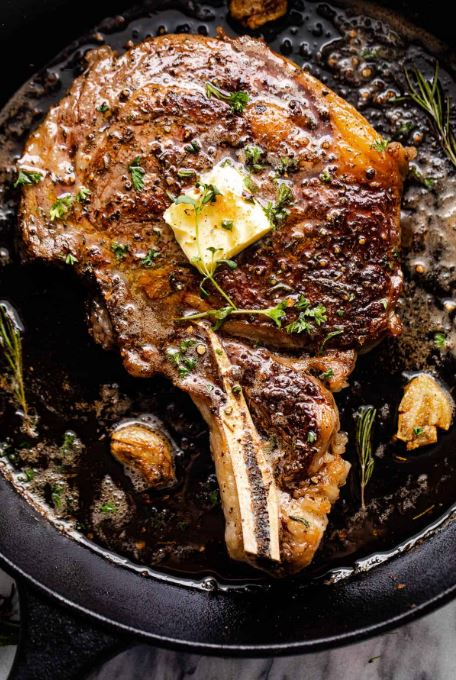

home
Ribeye Steak

A delicious and simple classic!
This easy-to-follow recipe provides consistently impressive results that will forever ruin steakhouses for you.
Ingredients
- 2 x 1½ lb bone-in ribeye steaks
- 1 bunch fresh thyme
- 4 cloves garlic, smashed.
- 2 tbsp butter
- Kosher salt, to taste.
- vegetable Oil
Instructions
The Dry-Brine
Dry-brining is a simple process that seasons and tenderizes the meat, while also removing moisture for a perfect crust.
- Pat steaks dry with a paper towel.
- Rub steaks generously on all sides with Kosher salt
- Place steaks on a wire tray in a baking pan. You want the pan to catch moisture, and the rack to keep the steaks from sitting in it.
- Place pan in fridge, uncovered, for 24-48 hours. Upon removal from fridge, meat will be a beautiful dark red.
The Reverse Sear
- Preheat oven to 250 degrees.
- Place baking rack with steaks in oven for about 25-35 minutes, depending on desired doneness.
- Once internal temperature of steaks is about 15 degrees below your desired doneness, pull steaks from oven. (If unsure of temperature, see key below)
Standard temperatures to determine steak doneness are as follows:
- Rare: 105°F in oven, 120°F final temperature.
- Medium-Rare: 115°F in oven, 130°F final temperature.
- Medium: 125°F in oven, 140°F final temperature.
- And that's it! That is all the steak temperatures.
- When the steaks are about ready to come out of the oven, add about a tablespoon of vegetable oil to a cast iron skillet and heat until it's ripping hot.
- Take the steaks out of the oven and lay them in the pan. Allow to cook for about 45 seconds to one minute on each side, making sure to sear edges and render fat as well. Remember: If the steak is attached to the pan, it's not ready to flip.
- Remove steaks from the pan momentarily and remove pan from heat.
- Add butter, thyme, and garlic to pan. Toss until butter is melted and garlic is brown. Do not burn the garlic.
- Return the steaks to the pan and baste with butter.
- Serve immediately. A reverse-seared steak does not need to rest.